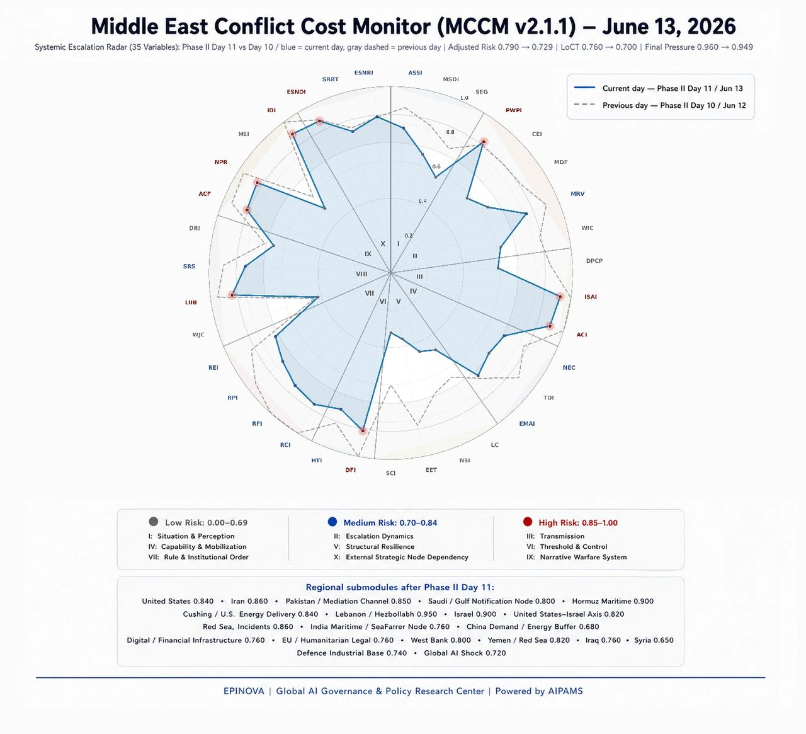

Will the War Really End?

The U.S.–Iran MOU, Israel’s Shadow Role, and the Next Struggle for the Middle East
Author: Dr. Shaoyuan Wu
ORCID: https://orcid.org/0009-0008-0660-8232
Affiliation: Global AI Governance and Policy Research Center, EPINOVA LLC
Date: June 5, 2026
The emerging memorandum of understanding between the United States and Iran should not be mistaken for a peace settlement. It is better understood as an attempt to build a firewall around a conflict that has become costly, interconnected, and difficult for any single actor to control. Its apparent provisions—a temporary extension of the ceasefire, the reopening of the Strait of Hormuz, phased sanctions relief or asset access, and follow-on talks over Iran’s nuclear and missile programs—do not amount to reconciliation. They amount to containment.
That distinction matters. A settlement resolves a conflict’s central dispute. This MOU appears designed to defer that dispute, sequence it, price it, and reduce the likelihood that it automatically triggers a wider war. The agreement may lower immediate U.S.–Iran hostilities, reopen maritime flows, and create a diplomatic channel for technical negotiations. But it does not remove the deeper structure of confrontation. Israel remains outside the text but inside the system. Iran retains asymmetric leverage. The United States retains sanctions, military pressure, and the ability to calibrate its support for Israel. Regional armed networks remain active. Global energy markets, Gulf states, China, Russia, India, and Europe all remain exposed to the consequences of renewed escalation.
The MOU, in short, is not an ending. It is a new phase of bargaining under systemic pressure.
A Deal Built Around Controlled Incompleteness
The most important feature of the emerging agreement is not only what it includes, but what it leaves unresolved. The United States and Iran appear to be moving toward a framework that suspends immediate escalation while deferring some of the hardest questions: the final disposition of Iran’s enriched uranium, the scope of missile limits, the status of proxy forces, the future of Israeli military freedom of action, the legal governance of Hormuz, and the sequencing of sanctions relief.
This incompleteness is not necessarily a flaw. It may be one reason the agreement can exist at all. If Washington demanded immediate Iranian strategic concessions, Tehran would be unlikely to accept the deal. If Tehran demanded binding U.S. guarantees against Israeli action, Washington would struggle to deliver them. If Israel were formally bound by a U.S.–Iran document, the arrangement would likely face serious resistance before implementation. If the document ignored Israel entirely, Iran would view it as an asymmetric arrangement. The result is likely to be a deliberately incomplete text: enough structure to reduce direct U.S.–Iran escalation, but enough ambiguity to preserve the political space of every principal actor.
Washington’s likely objective is not to solve the Middle East conflict. It is to separate, at least partially, the U.S.–Iran war track from the Israel–Iran security track. Since the conflict expanded, Israeli security imperatives have pulled the United States deeper into a confrontation whose costs are not limited to the battlefield. U.S. air defenses, naval assets, regional bases, sanctions tools, diplomatic bandwidth, and global credibility have all been drawn into the escalation cycle. The MOU allows Washington to reduce its direct exposure without formally abandoning Israel. It does not end Israeli concerns; it attempts to prevent those concerns from automatically becoming an open-ended U.S.–Iran war.
This is why the agreement will likely rely less on trust than on reversibility. Sanctions waivers can be paused. Assets can be released in tranches. Maritime pressure can be restored. Military options can remain in reserve. Nuclear talks can be slowed, suspended, or accelerated. The enforcement mechanism will not be a powerful external guarantor. It will more likely be a set of conditional exchanges in which each side keeps enough leverage to impose costs or withhold benefits if the other side fails to comply.
That makes the MOU less a conventional peace agreement than a reciprocal leverage structure. The United States holds sanctions, assets, military escalation options, and Israel-related leverage. Iran holds Hormuz, nuclear sequencing, missile and drone deterrence, proxy networks, and the ability to raise regional costs. Neither side is being asked to surrender these instruments. Each side is being asked to convert them from wartime tools into compliance tools.
Pakistan Can Host the Process, Not Enforce It
Pakistan’s role is significant but easily overstated. Islamabad can facilitate communication, host or transmit documents, provide political cover, and help manage procedural disputes. Its involvement gives the MOU a non-Western diplomatic channel and gives Iran a mediator that is not perceived simply as an extension of U.S. power. Pakistan also gives Washington a way to avoid placing the process entirely in the hands of Gulf states, European powers, or formal international institutions.
But Pakistan cannot enforce the agreement. It cannot compel the United States to sustain sanctions relief. It cannot compel Iran to accept intrusive nuclear restrictions. It cannot restrain Israel. It cannot discipline Hezbollah, the Houthis, or Iraqi militias. It cannot guarantee maritime security in the Strait of Hormuz. Its role is procedural, not coercive.
That means enforcement must be built into the design of the agreement itself. The MOU must operate through short cycles, verification windows, phased exchanges, and reversion clauses. If Iran keeps Hormuz open, asset releases and sanctions waivers can proceed. If Iran obstructs shipping or nuclear talks, relief can pause. If the United States delays promised relief, Iran can slow compliance. If Israel conducts major operations that Tehran views as inconsistent with the spirit of the arrangement, Iran can argue that Washington has not sufficiently restrained its partner. If Iranian-aligned forces attack U.S. assets or commercial shipping, Washington can argue that Tehran has not sufficiently restrained its network.
This is a central weakness of the framework: it can manage direct parties more easily than connected actors. The more the conflict depends on third parties, the more fragile the MOU becomes.
Israel: America’s Leverage and the Agreement’s Greatest Uncertainty
No actor better illustrates the MOU’s structural ambiguity than Israel. Israel is unlikely to be a formal signatory. Yet the agreement cannot work if Israel is treated as irrelevant. For Iran, the core security concern is not only U.S. military pressure but Israeli operational freedom: strikes on Iranian territory, pressure in Lebanon, attacks on nuclear-adjacent assets, and efforts to weaken Iran’s regional deterrent. If those actions continue without meaningful limits, Tehran may see the MOU as a mechanism that constrains Iran while leaving Israel relatively unconstrained.
For the United States, however, Israel remains both an ally and a bargaining instrument. Washington can use the possibility of Israeli action to pressure Iran without directly escalating itself. If Tehran obstructs nuclear talks, reactivates maritime pressure, or allows proxy attacks to resume, the United States can signal that Israel’s room for maneuver may expand. This makes Israel a form of delegated pressure: a tool that can influence Iran while allowing Washington to preserve diplomatic distance.
But the same feature that makes Israel useful as leverage also makes it uncertain as an implementation variable. If Israel conducts a major strike during the MOU period, Iran may treat it as evidence that Washington is not fully committed to restraint. If the United States backs Israel too openly, the agreement may lose credibility in Tehran. If Washington restrains Israel too much, Israel may conclude that the United States is discounting its security concerns in order to escape a costly regional conflict. The MOU therefore requires a second layer of understanding: not only a U.S.–Iran text, but a U.S.–Israel understanding about limits, thresholds, and consultation.
This second layer may be more important than the public document. The United States does not need Israel to sign the MOU. But it does need Israel not to undercut it. That requires Washington to manage Israel as a deterrent instrument rather than an uncontrolled escalation pathway. Doing so will be difficult. The United States prioritizes cost control and escalation management. Israel prioritizes deterrence restoration and the long-term degradation of Iran and its partners. These objectives overlap tactically but diverge strategically.
The MOU will depend on whether this divergence can be managed. If it cannot, Israel will remain both one of America’s most important sources of leverage and the variable most likely to determine whether the agreement stabilizes the conflict or merely postpones the next escalation.
Iran’s Best Strategy: Make the Board Larger
Iran’s most effective response is not simply to rely on its traditional armed network. Hezbollah, the Houthis, Iraqi militias, and other affiliated actors can impose costs, but they cannot by themselves create a durable political shield for Iran. Proxy pressure can disrupt. It cannot legitimate. It can raise the price of U.S. and Israeli action, but it also gives Washington and Israel grounds to accuse Tehran of violating the agreement.
Iran’s more sophisticated strategy is to enlarge the board. It should seek to turn the MOU from a narrow U.S.–Iran bargain into a wider system of stakeholder involvement. The goal would not be to form an overt anti-American bloc. That would make it easier for Washington to rebuild a containment coalition. Instead, Iran should try to embed China, Russia, India, Gulf states, Europe, Japan, South Korea, and international monitoring bodies into the practical functioning of the agreement.
The logic is straightforward. If the MOU remains a bilateral U.S.–Iran document, Washington retains disproportionate power to define compliance. If the agreement becomes connected to energy stability, shipping insurance, Gulf security, Asian oil imports, European inflation concerns, Russian logistics, Indian port interests, and international nuclear monitoring, then the cost of renewed escalation becomes more widely distributed. Iran does not need every actor to support Tehran. It only needs enough actors to prefer stability over renewed escalation.
China is central to this strategy because of its energy needs and its ability to frame Hormuz as a global trade and supply-chain issue rather than a bilateral security dispute. Russia provides strategic depth, diplomatic shielding, and northern logistical connectivity, though its own constraints limit how far it can go. India offers a different kind of value: it is not anti-American, but it has interests in energy flows, Chabahar, regional access, and strategic autonomy. Gulf states, especially Qatar, Oman, Saudi Arabia, and the United Arab Emirates, have no interest in Iranian dominance, but they do have a strong interest in preventing Hormuz from becoming a permanent war zone. Europe, Japan, and South Korea can support monitoring, nuclear sequencing, and market stabilization even if they remain politically cautious.
This is the move from proxy leverage to systemic leverage. Armed networks give Iran the ability to raise costs. Interest networks give Iran the ability to make others care about the cost of renewed war. The first creates deterrence through disruption. The second creates protection through interdependence.
But this strategy comes with constraints. The more Iran internationalizes the agreement, the more it must behave like a stakeholder rather than only a disruptor. If Tehran wants China, India, Gulf states, and Europe to defend stability, it cannot allow proxy attacks to make stability impossible. If it wants investment and energy normalization, it cannot repeatedly threaten the maritime routes on which those actors depend. If it wants nuclear sovereignty to be recognized under monitoring, it must accept that international stakeholders will demand real verification.
Iran’s challenge, then, is to institutionalize leverage without losing control of it. It must retain the ability to impose costs while convincing others that it prefers managed stability. That is a difficult balance, but it is also Iran’s best route out of isolation.
The United States’ Strategy: Preserve Control Without Owning the Whole War
For Washington, the MOU offers a different opportunity: the chance to regain strategic mobility. The United States entered the conflict with overwhelming military capabilities, but over time the war exposed a familiar problem of global power. Superior force does not automatically translate into sustainable control. A prolonged regional conflict can consume interceptors, naval assets, political attention, alliance bandwidth, and domestic legitimacy. It can also affect other theaters by narrowing U.S. flexibility in Europe and the Indo-Pacific.
The emerging MOU allows the United States to compress its objectives. Instead of demanding the immediate strategic transformation of Iran, Washington can prioritize more limited goals: reopen Hormuz, reduce attacks on U.S. forces, contain the nuclear file within technical talks, prevent oil shocks, preserve sanctions leverage, and avoid being trapped by Israeli escalation preferences. This is not victory in the maximal sense. It is damage limitation and procedural control.
The risk is that Washington may try to preserve too much ambiguity. If the United States refuses to clarify how Israeli action will be handled, Iran may not trust the agreement. If Washington promises too much restraint on Israel, it may create expectations it cannot fulfill. If it uses sanctions relief too slowly, Tehran may conclude that compliance brings too little benefit. If it releases too much too quickly, it loses leverage. If it treats every proxy incident as Iranian bad faith, the agreement may weaken. If it ignores proxy activity, domestic critics and Israel will accuse it of appeasement.
The United States must therefore manage three lines at once: Iran’s compliance, Israel’s restraint, and the credibility of phased relief. This requires a level of bureaucratic discipline and political coherence that wartime diplomacy often lacks.
The Legal Weakness Is Part of the Design
The MOU’s legal status is likely to be modest. That, too, may be intentional. A formal treaty would be harder to negotiate, harder to ratify or defend domestically, and harder to reconcile with the unresolved role of Israel. A legally binding security guarantee to Iran would be politically difficult for Washington. A binding restriction on Israel would face strong resistance from Israel. A final nuclear settlement would require a level of technical agreement that does not yet exist.
A lower-ranking instrument gives both sides flexibility. It allows Washington to avoid formally guaranteeing Iranian security while still creating a pathway for de-escalation. It allows Tehran to avoid surrendering its core leverage while still receiving phased benefits. It allows both sides to test compliance before entering a more formal arrangement. The price of this flexibility is fragility: the MOU can pause escalation, but it cannot by itself lock in peace.
Its value will therefore depend less on its legal title than on its implementation architecture. A modest legal document with credible sequencing, rapid attribution, phased benefits, and reversion mechanisms may outperform a stronger legal document that no party is willing or able to enforce. In this case, legal weakness may be the price of political usability.
The Coming Technical Talks Will Be About Cost
The next phase will be called technical negotiation, but its real subject will be cost allocation. Nuclear stockpile disposition, enrichment limits, missile restrictions, maritime monitoring, sanctions waivers, asset releases, oil exports, port access, insurance rates, reconstruction channels, and force posture constraints are all ways of deciding who pays, who recovers, who waits, and who retains leverage.
For Iran, the technical talks will be an attempt to convert wartime survival into recognized bargaining assets: sovereign nuclear handling, sanctions relief, oil-export access, security language, and protection against renewed Israeli attacks. For the United States, the talks will be an attempt to prevent Iran from institutionalizing too much leverage while extracting enough compliance to justify de-escalation. For Israel, the talks will be watched through a single question: does the process reduce Iran’s future threat, or merely allow Iran to recover under diplomatic cover?
The answer will determine whether the MOU becomes a bridge to stabilization or a pause before the next round.
The Most Likely Failure Path
The MOU is unlikely to fail through a formal declaration of collapse. It is more likely to erode through ambiguous incidents: a drone attack on a vessel, an Israeli strike in Lebanon, a militia attack on a U.S. facility, a dispute over IAEA access, a delayed asset release, a missile test, or a media campaign accusing the other side of bad faith. Each incident will be interpreted not only on its own terms but as evidence of the other side’s strategic intention.
This is the problem of third-party violation spirals. If a Hezbollah-linked attack occurs, Israel will blame Iran. If Israel strikes in Lebanon, Iran will blame the United States. If the Houthis threaten shipping, Washington will argue that Tehran has failed to restrain its network. If the United States continues supporting Israeli operations, Tehran will argue that Washington is using Israel to bypass the MOU. The agreement’s survival will depend on whether these disputes can be routed into attribution and dispute-resolution mechanisms before they become military triggers.
The danger is not that the parties lack leverage. They may have too much of it. Every retained lever can also become a tripwire.
The Real Test
The MOU’s success will not be measured only by whether it is signed. It will be measured by whether it can survive the first serious ambiguity. Can it absorb an Israeli operation without unraveling? Can it process a proxy incident without immediate escalation? Can it deliver enough sanctions relief to keep Iran invested, without convincing Israel and U.S. hawks that Iran has been rewarded? Can it keep Hormuz open while preventing Iran from turning maritime access into a recognized governance claim? Can it move the nuclear file forward without demanding instant surrender or accepting indefinite deferral?
These are not technical questions alone. They are questions of system design.
The agreement’s central promise is not peace but controllability. It attempts to convert war into procedure, pressure into sequencing, and coercion into conditional exchange. That may be enough to prevent direct U.S.–Iran escalation. It may even reopen maritime trade and create a temporary diplomatic channel. But unless Israel is indirectly constrained, Iran’s external stakeholders are broadened, and compliance mechanisms are made fast, reversible, and credible, the MOU will remain a provisional framework built around an unresolved conflict.
The Middle East may be entering a period not of postwar settlement, but of managed incompletion. The war may pause. The bargaining will continue.
Share this post: